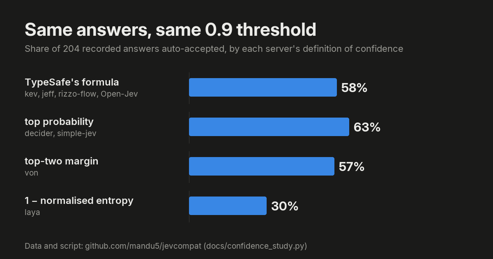

“Compatible”
needs a contract.
Eight open servers. Forty-eight requirements.
Inspect what the wire actually promises.
servers passed every applicable MUST
in the recorded 24 Sep 2026 runs.
Scroll to compare all eight servers. Use arrow keys on the matrix to move between requirements.
Recorded conformance results · 2026-09-24 · checks assess the wire contract, not model intelligence.
Recorded reports could not be loaded. or read the source reports.
Read the runs.
Keep the evidence.
Measured on an M1 Pro (16 GB), with each server at a pinned commit and pinned weights. Reports preserve the exact requests and responses.
Every failure was checked by hand against its recorded exchange. Read the review ↗
Same answers.
Different confidence.
A threshold tuned for one server changes its automation rate on another. The spec recommends one formula; the proxy recomputes it.

TypeSafe’s formula auto-accepts 58% of these answers. Laya’s definition accepts 30%, rejecting 56 of the 118 answers TypeSafe’s formula accepts. Decider’s definition accepts 10 answers that TypeSafe’s formula would send for review.
confidence.formula is a SHOULD, not a MUST: TypeSafe lets clients use other definitions. Passing the wire checks does not establish model accuracy or calibration.
Check a server.
A numbered specification, a conformance suite, and the bytes behind each result.
uvx jevcompat test http://localhost:8000
jevcompat test URL --key-env MY_KEY
jevcompat test URL --json r.json --markdown r.md --badgeThe verdict distinguishes conformant, not conformant, not tested and incomplete. A timeout is never counted as a server failure.
Put the contract
in front.
Repair contract differences that can be repaired. Refuse unsupported responses explicitly.
jevcompat proxy http://localhost:8000 --port 8788
jevcompat proxy URL --upstream-model laya --splitThe proxy recomputes choice, score, legend and confidence from the probabilities. It validates requests and lists its changes in x-jevcompat-fixes. Missing or ambiguous options and invalid distributions are refused with 502 upstream_error.